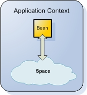
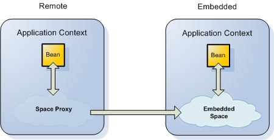
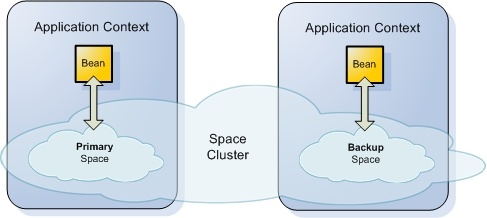

Section Summary: A Space component allows you to create an IJSpace (or JavaSpace) based on a space URL.
Overview
The different space components allow you to configure a space within a Spring application context (or a Processing Unit). A Space component allows you to create an IJSpace (or JavaSpace) with the most common practice of creating one based on a Space URL.

Here is an example of creating a space within a Spring XML-based configuration:
Namespace
<os-core:space id="space" url="/./space" />
Plain XML
<bean id="space" class="org.openspaces.core.space.UrlSpaceFactoryBean"> <property name="url" value="/./space" /> </bean>
Code
UrlSpaceConfigurer spaceConfigurer = new UrlSpaceConfigurer("/./space"); IJSpace space = spaceConfigurer.space(); // ... // shutting down / closing the Space spaceConfigurer.destroy();
This example creates an embedded space (IJSpace) within the Spring application context (using the /./ prefix) with the name space and a Spring bean id of the space.
| You may consider using the OpenSpaces Configuration API (Configurers) in scenarios in which a Spring wiring them through XML configuration can not be used or you prefer using Code Based Configuration. Refer to the Javadoc for more details. |
URL Properties
The UrlSpaceFactoryBean allows you to set different URL properties (as defined in the Space URL), either explicitly using explicit properties, or using a custom Properties object. All of the current URL properties are exposed using explicit properties, in order to simplify the configuration.
Here is an example of a space with a specific schema working in FIFO mode, using specific lookup groups.
Namespace
<os-core:space id="space" url="/./space" fifo="true" lookup-groups="test" />
Plain XML
<bean id="space" class="org.openspaces.core.space.UrlSpaceFactoryBean"> <property name="url" value="/./space" /> <property name="fifo" value="true" /> <property name="lookupGroups" value="test" /> </bean>
Code
UrlSpaceConfigurer spaceConfigurer = new UrlSpaceConfigurer("/./space").fifo(true) .lookupGroups("test"); IJSpace space = spaceConfigurer.space(); // ... // shutting down / closing the Space spaceConfigurer.destroy();
Overriding Default Configuration Using General Properties
The space allows you to override specific schema configuration element values using the Properties object, that uses an XPath-like navigation as the name value. The UrlSpaceFactoryBean allows you to set the Properties object, specifying it within the Spring configuration.
| Which component's configuration can be overridden? The general properties are used to override various components such as the space, space container, cluster schema properties, space proxy/client configuration, space URL attributes and other system and environmental properties. |
Namespace
<os-core:space id="space" url="/./space"> <os-core:properties> <props> <prop key="space-config.engine.cache_policy">0</prop> </props> </os-core:properties> </os-core:space>
Plain XML
<bean id="space" class="org.openspaces.core.space.UrlSpaceFactoryBean"> <property name="url" value="/./space" /> <property name="properties"> <props> <prop key="space-config.engine.cache_policy">0</prop> </props> </property> </bean>
Code
UrlSpaceConfigurer spaceConfigurer =
new UrlSpaceConfigurer("/./space").addProperty("space-config.engine.cache_policy", "0");
IJSpace space = spaceConfigurer.space();
// ...
// shutting down / closing the Space
spaceConfigurer.destroy();
Embedded vs. Remote Space
When looking up or creating a space, OpenSpaces qualifies the state of the Space as either embedded or remote. An embedded space uses /./ as the URL "protocol", and causes the space to be created and be part of the application context (or processing unit). A remote space is one that was looked up using one of the remote protocols (Jini or RMI). The previous example showed how to look up an embedded space, while the example below shows you how to look up a remote space using the Jini protocol (looks up a space called space on all machines under the same lookup group).

Namespace
<os-core:space id="space" url="jini://*/*/space" />
Plain XML
<bean id="space" class="org.openspaces.core.space.UrlSpaceFactoryBean"> <property name="url" value="jini://*/*/space" /> </bean>
Code
UrlSpaceConfigurer spaceConfigurer = new UrlSpaceConfigurer("jini://*/*/space"); IJSpace space = spaceConfigurer.space(); // ... // shutting down / closing the Space spaceConfigurer.destroy();
Clustering
OpenSpaces views clustering as a deployment or runtime decision. The idea is not to configure a space with clustering information (total_members, id, etc.) within the Spring configuration, but allows the application context to be injected with this information when it is deployed (or run within the IDE).
Built on the same concept of Spring ApplicationContextAware callback interface, OpenSpaces defines ClusterInfo – an object holding the specific Processing Unit instance cluster parameters (id, total_members, backup_id, etc.), and ClusterInfoAware – allows any Spring bean to implement this interface and be injected with the cluster parameters.
The UrlSpaceFactoryBean implements this ClusterInfoAware and uses the ClusterInfo in order to automatically amend the Space URL with cluster parameters. The ClusterInfo is provided by external containers that can run a Processing Unit.
 For more details on ClusterInfo, refer to this section.
For more details on ClusterInfo, refer to this section.
Reconnection
The Proxy Connectivity settings specifies the client behavior once a clustered space is shutdown/terminated. To allow the client to reconnect with a clustered space that was terminated and restarted (un-deployed and deployed) you should set the space-config.proxy-settings.connection-retries to have a high value.
See below example setting the space-config.proxy-settings.connection-retries parameter with a pu.xml encapsulating a space:
<os-core:space id="space" url="/./space"> <os-core:properties> <props> <prop key="space-config.proxy-settings.connection-retries">100</prop> </props> </os-core:properties> </os-core:space>
See the Proxy Connectivity section for details about the exact behavior of a space client with each space operation when using a clustered space.
Primary/Backup
When working in clustered mode (schema) that includes a primary/backup schema, several components within the Processing Unit need to be aware of the current space mode and any changes made to it (such as event containers). Using Spring support for application events, two events are defined within OpenSpaces: BeforeSpaceModeChangeEvent and AfterSpaceModeChangeEvent. Both are raised when a space changes its mode from primary to backup or versa, and holds the current space mode.

Custom beans that need to be aware of the space mode (for example, working directly against a cluster member, i.e. not using a clustered proxy of the space, and performing operations against the space only when it is in primary mode) can implement the Spring ApplicationListener and check for the mentioned events.
 OpenSpaces also provides the Space Mode Context Loader, which can load the Spring application context when it has become primary, and unload it when it moves to backup.
OpenSpaces also provides the Space Mode Context Loader, which can load the Spring application context when it has become primary, and unload it when it moves to backup.
In embedded mode, the space factory bean registers with the space for space mode changes. The registration is performed on the actual space instance (and not a clustered proxy of it), and any events raised are translated to the equivalent OpenSpaces space mode change events. In remote mode, a single primary event is raised.
Space mode registration can be overridden and explicitly set within the space factory configuration. Here is an example of how it can be set (it cannot register for notifications even though it is an embedded space):
Namespace
<os-core:space id="space" url="/./space" register-for-space-mode-notifications="false" />
Plain XML
<bean id="space" class="org.openspaces.core.space.UrlSpaceFactoryBean"> <property name="url" value="/./space" /> <property name="registerForSpaceModeNotifications" value="false" /> </bean>
Code
UrlSpaceConfigurer spaceConfigurer =
new UrlSpaceConfigurer("/./space").registerForSpaceModeNotifications(false);
IJSpace space = spaceConfigurer.space();
// ...
// shutting down / closing the Space
spaceConfigurer.destroy();
Primary Backup Notifications
A bean can implement the following interfaces to get notified about space mode changes:
| Interface | Implemented Method | When Invoked |
|---|---|---|
| SpaceBeforeBackupListener | void onBeforeBackup(BeforeSpaceModeChangeEvent event) | Before a space becomes backup |
| SpaceBeforePrimaryListener | void onBeforePrimary(BeforeSpaceModeChangeEvent event) | Before a space becomes primary |
| SpaceAfterBackupListener | void onAfterBackup(AfterSpaceModeChangeEvent event) | After a space becomes backup |
| SpaceAfterPrimaryListener | void onAfterPrimary(AfterSpaceModeChangeEvent event) | After a space becomes primary |
class MyBean implements SpaceBeforeBackupListener, SpaceAfterPrimaryListener { // invoked before a space becomes backup public void onBeforeBackup(BeforeSpaceModeChangeEvent event) { // Do something } // invoked after a space becomes primary public void onAfterPrimary(AfterSpaceModeChangeEvent event { // Do something } }
If the bean would not implement any of the interfaces above, another option is to annotate the bean's methods that need to be invoked when a space mode changes.
| Annotation | Method Parameter | When Invoked |
|---|---|---|
| @PreBackup | none or BeforeSpaceModeChangeEvent | Before a space becomes backup |
| @PrePrimary | none or BeforeSpaceModeChangeEvent | Before a space becomes primary |
| @PostBackup | none or AfterSpaceModeChangeEvent | After a space becomes backup |
| @PostPrimary | none or AfterSpaceModeChangeEvent | After a space becomes primary |
class MyBean {
// invoked before a space becomes backup; gets the BeforeSpaceModeChangeEvent as a parameter
@PreBackup
public void myBeforeBackupMethod(BeforeSpaceModeChangeEvent event) {
// Do something
}
// invoked after a space becomes primary; doesn't get any parameter.
@PostPrimary
public void myAfterPrimaryMethod() {
// Do something
}
}
In order to enable this feature, the following should be placed within the application context configuration:
Listening for Space Mode Changed Events
When a remote client is interested to receive events when a space instance changing its runtime mode (from primary to backup or vise versa), it should implement the SpaceModeChangedEventListener. See below how:
Registering for the event using the Administration API:
Admin admin = new AdminFactory().createAdmin(); Space space = admin.getSpaces().waitFor(spaceName, 10, TimeUnit.SECONDS); SpaceModeChangedEventManager modeManager = space.getSpaceModeChanged(); MySpaceModeListener spaceModeListener = new MySpaceModeListener (); modeManager.add(spaceModeListener);
The MySpaceModeListener should implement the SpaceModeChangedEventListener - see below simple example:
public class MySpaceModeListener implements SpaceModeChangedEventListener{ Space space ; public MySpaceModeListener (Space space) { this.space=space; } public void spaceModeChanged(SpaceModeChangedEvent event) { String partition_member = event.getSpaceInstance().getInstanceId()+""; if (event.getSpaceInstance().getBackupId() != 0) { partition_member = partition_member+ "_" + event.getSpaceInstance().getBackupId(); } System.out.println("SpaceModeChangedEvent: Space " + space.getName() +" - Instance " + partition_member + " moved into " + event.getNewMode()); } }
Security
A secured space should be configured with a security context so that it can be accessed (when connecting to it remotely). Here is an example of how this can be configured:
Namespace
<os-core:space id="space" url="jini://*/*/space"> <os-core:security username="sa" password="adaw@##$" /> </os-core:space>
Plain XML
<bean id="space" class="org.openspaces.core.space.UrlSpaceFactoryBean"> <property name="url" value="jini://*/*/space" /> <property name="securityConfig"> <bean class="org.openspaces.core.space.SecurityConfig"> <property name="username" value="sa" /> <property name="password" value="adaw@##$" /> </bean> </property> </bean>
Here is an example of how to define security with an embedded space. In this case, we enable security and specify the username and password.
Namespace
<os-core:space id="space" url="/./space"> <os-core:security username="sa" password="adaw@##$" /> </os-core:space>
Plain XML
<bean id="space" class="org.openspaces.core.space.UrlSpaceFactoryBean"> <property name="url" value="/./space" /> <property name="securityConfig"> <bean class="org.openspaces.core.space.SecurityConfig"> <property name="username" value="sa" /> <property name="password" value="adaw@##$" /> </bean> </property> </bean>
It is possible to configure the space to be secured using deploy time properties (bean level properties), without declaring the security element. The security.username and security.password can be provided, and the spaces defined within the processing unit are automatically secured.
For more details, refer to the Space Security section.
Space Filters
The UrlSpaceFactoryBean allows you to configure Space Filters. It uses the space support for a FilterProvider, which is a wrapper for an ISpaceFilter implementation and its characteristics (such as priority, activeWhenBackup). This allows you to provide space filters without changing the space schema.
 Space Filters can only be used with embedded spaces.
Space Filters can only be used with embedded spaces.
ISpaceFilter
An actual implementation of the ISpaceFilter interface can be provided using the SpaceFilterProviderFactory class. Here is a very simple example of an ISpaceFilter implementation:
public class SimpleFilter implements ISpaceFilter { public void init(IJSpace space, String filterId, String url, int priority) throws RuntimeException { // perform operations on init } public void process(SpaceContext context, ISpaceFilterEntry entry, int operationCode) throws RuntimeException { // process single entry filter operations } public void process(SpaceContext context, ISpaceFilterEntry[] entries, int operationCode) throws RuntimeException { // process multiple entries filter operation (such as update) } public void close() throws RuntimeException { // perform operation when filter closes } }
The following Spring configuration registers this filter for before write (0), before read (2), and before take (3) operations:
Namespace
<bean id="simpleFilter" class="eg.SimpleFilter" /> <os-core:space id="space" url="/./space"> <os-core:space-filter priority="2"> <os-core:filter ref="simpleFilter" /> <os-core:operation code="0" /> <os-core:operation code="2" /> <os-core:operation code="3" /> </os-core:space-filter> </os-core:space>
Plain XML
<bean id="simpleFilter" class="eg.SimpleFilter" /> <bean id="space" class="org.openspaces.core.space.UrlSpaceFactoryBean"> <property name="url" value="/./space" /> <property name="filterProviders"> <list> <bean class="org.openspaces.core.space.filter.SpaceFilterProviderFactory"> <property name="filter" ref="simpleFilter" /> <property name="priority" value="2" /> <property name="operationCodes"> <list> <value>0</value> <value>2</value> <value>3</value> </list> </property> </bean> </list> </property> </bean>
Delegate Filters
OpenSpaces comes with delegate implementations of ISpaceFilter, allowing you to use either annotations or explicit method listings in order to use POJOs as space filters.
Here is an example of a simple POJO filter using annotations:
public class SimpleFilter { @OnFilterInit void init() { } @OnFilterClose void close() { } @BeforeWrite public void beforeWrite(Message entry) { // ... } @AfterWrite public void afterWrite(Echo echo) { // ... } @BeforeRead public void beforeRead(ISpaceFilterEntry entry) { // ... } @BeforeTake public void beforeTake(Message entry, int operationCode) { // ... } }
This example (which also applies to explicit method listings, just without the annotations) demonstrates different options to mark methods as filter operation callbacks or filter lifecycle callbacks.
First, note the beforeRead(ISpaceFilterEntry entry) method (the method name can be any name of your choice). The method accepts the same ISpaceFilterEntry that the ISpaceFilter process method uses (which is usually used for extracting the actual template or Entry). With the beforeWrite(Message entry) method, the delegate automatically detects that the first parameter is not an ISpaceFilterEntry, and uses it to extract the actual Entry, which is used to invoke the method with (in our case) Message. When using Entry-type classes in the filter callback, other types that are not assignable to the Entry parameter type, do not cause the filter method callback to be invoked. (In our case, beforeWrite is not invoked for the echo object.)
 When either annotations or explicit method listings are used, only a single method per operation can be defined.
When either annotations or explicit method listings are used, only a single method per operation can be defined.
The delegate filter shown above, can be configured in Spring using the following XML:
Namespace
<bean id="simpleFilter" class="test.SimpleFilter" /> <os-core:space id="space" url="/./space"> <os-core:annotation-adapter-filter priority="2"> <os-core:filter ref="simpleFilter" /> </os-core:annotation-adapter-filter> </os-core:space>
Plain XML
<bean id="simpleFilter" class="test.SimpleFilter" /> <bean id="space" class="org.openspaces.core.space.UrlSpaceFactoryBean"> <property name="url" value="/./space" /> <property name="filterProviders"> <bean class="org.openspaces.core.space.filter.AnnotationFilterFactoryBean"> <property name="filter" ref="simpleFilter" /> <property name="priority" value="2" /> </bean> </property> </bean>
The following Spring configuration XML shows how the filter can be configured, using explicit method listings. (In this case, annotations are not required.)
Namespace
<bean id="simpleFilter" class="test.SimpleFilter" /> <os-core:space id="space" url="/./spaceAdapterSimpleFilterMethod"> <os-core:method-adapter-filter priority="2" filter-init="init" filter-close="close" before-write="beforeWrite" after-write="afterWrite" before-read="beforeRead" before-take="beforeTake"> <os-core:filter ref="simpleFilter"/> </os-core:method-adapter-filter> </os-core:space>
Plain XML
<bean id="simpleFilter" class="test.SimpleFilter" /> <bean id="space" class="org.openspaces.core.space.UrlSpaceFactoryBean"> <property name="url" value="/./space" /> <property name="filterProviders"> <bean class="org.openspaces.core.space.filter.MethodFilterFactoryBean"> <property name="filter" ref="simpleFilter" /> <proeprty name="priority" value="2" /> <property name="filterInit" value="init" /> <property name="filterClose" value="close" /> <property name="beforeWrite" value="beforeWrite" /> <property name="afterWrite" value="afterWrite" /> <property name="beforeRead" value="beforeRead" /> <property name="beforeTake" value="beforeTake" /> </bean> </property> </bean>
Accessing a Space within a Space Filter
Accessing a space within a space filter can cause a cycle construction exception, since the space can not be injected to the filter (because the space was not constructed yet). There are options to solve this with pure Spring, but OpenSpaces provides a simpler option by using the GigaSpacesLateContext annotation.
Space Replication Filters
The UrlSpaceFactoryBean allows you to configure Cluster Replication Filters. It uses the space support for a ReplicationFilterProvider which is a wrapper for an IReplicationFilter implementation and its characteristics (such as activeWhenBackup). This allows you to provide space replication filters without changing the space schema.
 Space replication filters can only be used with embedded spaces.
Space replication filters can only be used with embedded spaces.
A simple implementation of IReplicationFilter is shown below:
public class SimpleReplicationFilter implements IReplicationFilter { public void init(IJSpace space, String paramUrl, ReplicationPolicy replicationPolicy) { // init logic here } public void process(int direction, IReplicationFilterEntry replicationFilterEntry, String remoteSpaceMemberName) { // process logic here } public void close() { // close logic here } }
The following configuration shows how it can be injected:
Namespace
<bean id="simpleReplicationFilter" class="eg.SimpleReplicationFilter" /> <os-core:space id="space" url="/./space"> <os-core:space-replication-filter> <os-core:input-filter ref="simpleReplicationFilter" /> <os-core:output-filter ref="simpleReplicationFilter" /> </os-core:space-replication-filter> </os-core:space>
Plain XML
<bean id="simpleReplicationFilter" class="eg.SimpleReplicationFilter" /> <bean id="space" class="org.openspaces.core.space.UrlSpaceFactoryBean"> <property name="url" value="/./space" /> <property name="replicationFilterProvider"> <bean class="org.openspaces.core.space.filter.replication.DefaultReplicationFilterProviderFactory"> <property name="inputFilter" ref="simpleReplicationFilter" /> <property name="outputFilter" ref="simpleReplicationFilter" /> </bean> </property> </bean>
External Data Source
When constructing a space, it is possible to provide an External Data Source using Spring-based configuration (instead of using the space schema). Here is an example of how it can be defined:
Namespace
<bean id="dataSource" class="org.apache.commons.dbcp.BasicDataSource" destroy-method="close"> <property name="driverClassName" value="org.hsqldb.jdbcDriver"/> <property name="url" value="jdbc:hsqldb:hsql://localhost:9001"/> <property name="username" value="sa"/> <property name="password" value=""/> </bean> <bean id="sessionFactory" class="org.springframework.orm.hibernate3.LocalSessionFactoryBean"> <property name="dataSource" ref="dataSource"/> <property name="mappingResources"> <list> <value>Person.hbm.xml</value> </list> </property> <property name="hibernateProperties"> <props> <prop key="hibernate.dialect">org.hibernate.dialect.HSQLDialect</prop> <prop key="hibernate.cache.provider_class">org.hibernate.cache.NoCacheProvider</prop> <prop key="hibernate.cache.use_second_level_cache">false</prop> <prop key="hibernate.cache.use_query_cache">false</prop> <prop key="hibernate.hbm2ddl.auto">update</prop> </props> </property> </bean> <bean id="hibernateDataSource" class="com.gigaspaces.datasource.hibernate.HibernateDataSource"> <property name="sessionFactory" ref="sessionFactory"/> </bean> <os-core:space id="space" url="/./space" schema="persistent" external-data-source="hibernateDataSource" />
Plain XML
<bean id="dataSource" class="org.apache.commons.dbcp.BasicDataSource" destroy-method="close"> <property name="driverClassName" value="org.hsqldb.jdbcDriver"/> <property name="url" value="jdbc:hsqldb:hsql://localhost:9001"/> <property name="username" value="sa"/> <property name="password" value=""/> </bean> <bean id="sessionFactory" class="org.springframework.orm.hibernate3.LocalSessionFactoryBean"> <property name="dataSource" ref="dataSource"/> <property name="mappingResources"> <list> <value>Person.hbm.xml</value> </list> </property> <property name="hibernateProperties"> <props> <prop key="hibernate.dialect">org.hibernate.dialect.HSQLDialect</prop> <prop key="hibernate.cache.provider_class">org.hibernate.cache.NoCacheProvider</prop> <prop key="hibernate.cache.use_second_level_cache">false</prop> <prop key="hibernate.cache.use_query_cache">false</prop> <prop key="hibernate.hbm2ddl.auto">update</prop> </props> </property> </bean> <bean id="hibernateDataSource" class="com.gigaspaces.datasource.hibernate.HibernateDataSource"> <property name="sessionFactory" ref="sessionFactory"/> </bean> <bean id="space" class="org.openspaces.core.space.UrlSpaceFactoryBean"> <property name="url" value="/./space" /> <property name="scheam" value="persistent" /> <property name="externalDataSource" ref="hibernateDataSource" /> </bean>
The above example uses Spring built-in support for configuring both a custom JDBC DataSource and a Hibernate SessionFactory to define and use the GigaSpaces built-in HibernateDataSource. The GigaSpaces data source is then injected into the space construction (note the specific schema change), and causes the space to use it.
 This configuration can also be used with the GigaSpaces Mirror Service deployed as a Processing Unit.
This configuration can also be used with the GigaSpaces Mirror Service deployed as a Processing Unit.
IWorker Adapter
OpenSpaces provides an adapter allowing you to work with deprecated IWorker implementations. IWorkers are classes that implement the IWorker interface and allow you to run code embedded with the Space, and have the Space manage their lifecycle. As shown in OpenSpaces, this is much simpler now, with beans that are defined in the same context as the Space. The WorkerAdapter allows you to run IWorker implementations as beans in the context. Here is an example:
Namespace
<os-core:space id="space" url="/./space" /> <os-core:giga-space id="gigaSpace" space="space" /> <bean id="myWorker" class="eg.MyWorker" /> <bean id="workerAdapter" class="org.openspaces.core.space.support.WorkerAdapter"> <property name="gigaSpace" ref="gigaSpace" /> <property name="worker" ref="myWorker" /> </bean>
Plain XML
<bean id="space" class="org.openspaces.core.space.UrlSpaceFactoryBean"> <property name="url" value="/./space" /> </bean> <bean id="gigaSpace" class="org.openspaces.core.GigaSpaceFactoryBean"> <property name="space" ref="space" /> </bean> <bean id="myWorker" class="eg.MyWorker" /> <bean id="workerAdapter" class="org.openspaces.core.space.support.WorkerAdapter"> <property name="gigaSpace" ref="gigaSpace" /> <property name="worker" ref="myWorker" /> </bean>
The above example shows how an IWorker implementation named MyWorker has the same behavior using the WorkerAdapter as the old manner of configuring workers. All the different properties that can be set on the old worker configuration can also be set on the WorkerAdapter. For more details, see Javadoc.
Schema
The Space component schema and complete configuration options are described below:
{kind=link}
Section Contents
- Space Filters — Space Filters are interceptors inside the GigaSpaces space engine.
- Cluster Replication Filters — How to call custom business logic when data is replicated in a replicated cluster topology.
- Space Mode Context Loader — Allows you to load a Spring application context only when the Processing Unit or space is in primary mode, and unload it when the Processing Unit or space is in backup mode.
- Space URL — An address, passed to GigaSpace, used to connect to a space and remotely create new spaces as well as enable various characteristics.